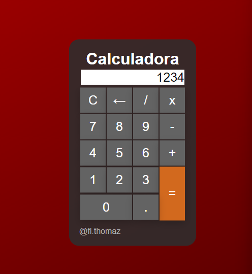
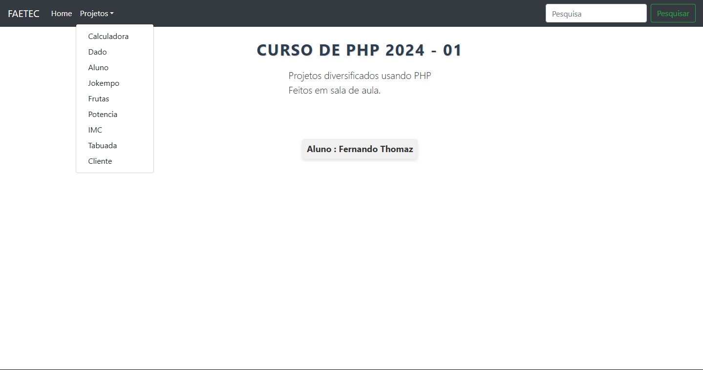

Portfólio
Projetos Pessoais
Calculadora Front-End
Tecnologias usadas : HTML, CSS, JavaScript
Descrição : Calculadora com funções básicas desenvolvida como exercício de aprendizagem.
Gerador de QR Code
Tecnologias usadas : HTML, CSS, JavaScript
Descrição : Website que gera um QR Code baseado no site que o usuário digitar.
Projeto Conjunto
Projeto FAETEC
Tecnologias usadas : HTML, CSS, JavaScript, PHP, mySQL
Descrição : Website que armazena um conjunto de trabalhos, sites e jogos realizados com alguns colegas durante meu curso de PHP na Faetec.
